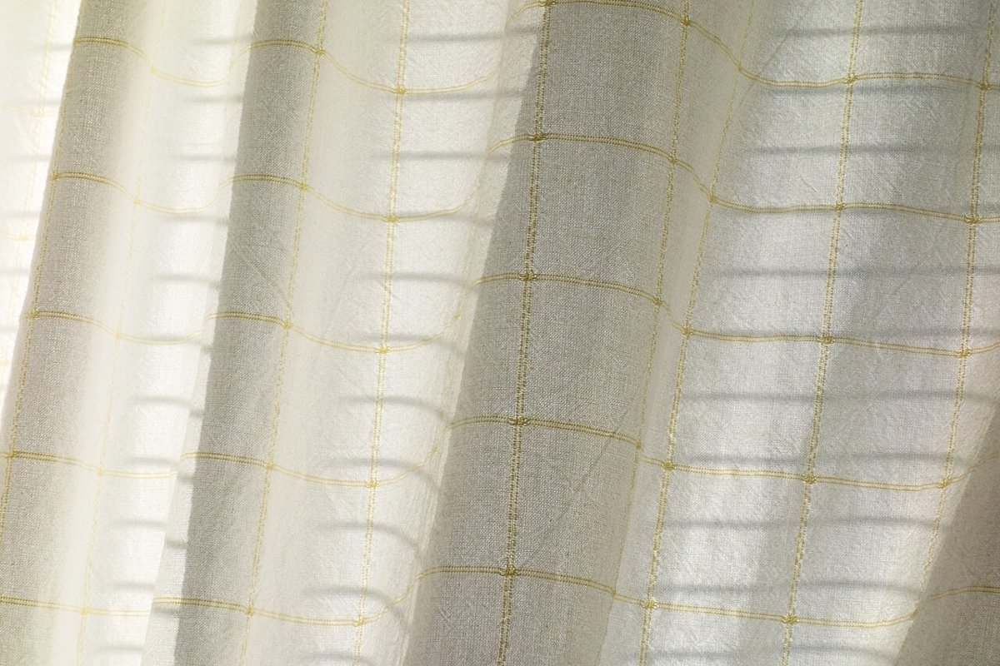

カフェ / 香川県高松市牟礼町
SHINしんカフェ
香川県高松市牟礼町大町にあるカフェ「SHINcafe」のご案内ページです。営業時間やメニューなど、詳しいことは準備中。まずはInstagramをのぞいてみてください。

制作側の連想
「しん」と読むなら、五つの字
屋号の由来は分かりません。制作側は、SHINをローマ字読みで「しん」と読んだ場合に当てはまる漢字から連想し、このページを「しん」の字札5枚の作りにしました。新・心・真・芯・信です。お店の理念や由来とは無関係の、制作側の連想です。
五枚の字札(イメージ)
しん、の五通り。
写真は高松市の風景やお店のものではありません。字のイメージで選んだ、国外・撮影地不明のフリー素材です。

撮影地不明のイメージ 新しい、の「しん」。空の写真は、はじまりのイメージで選びました。

国外のイメージ(ノルウェー) 心、の「しん」。暗がりに灯る光を、まんなかの意味で重ねました。

撮影地不明のイメージ 真、の「しん」。真上から見たカップで「真上」の「真」を。

撮影地不明のイメージ 芯、の「しん」。葉の中央を走る太い筋を、芯に見立てました。

撮影地不明のイメージ 信、の「しん」。手紙や本のような、便りのイメージです。